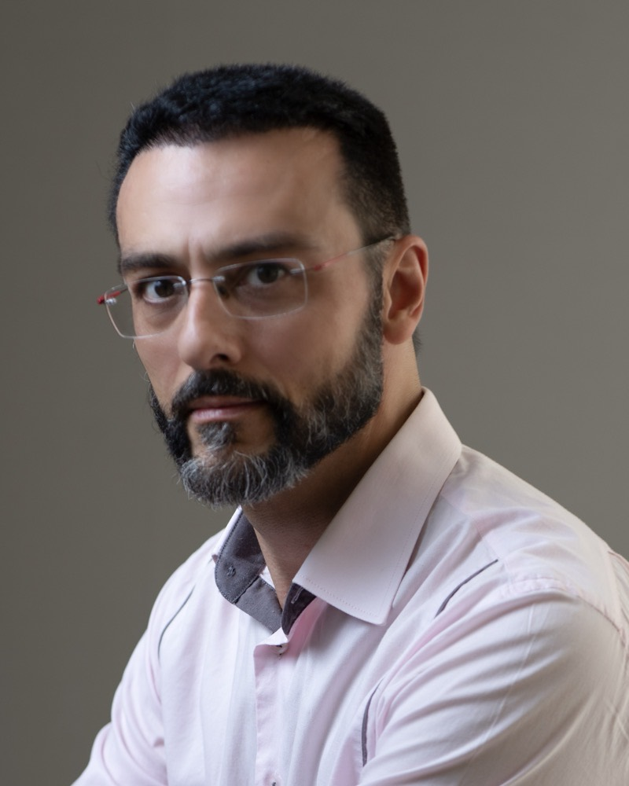

Uma hora inteira de consulta, para entender o que está acontecendo com você.
Em Ubá ou por vídeo, para adultos, adolescentes e idosos. Você escreve, a secretária responde com os horários.
- 1 horade consulta, sem pressa
- Desde 2006em consultório
- Ubáou por vídeo
O que acontece depois que você escreve
- 1
A secretária responde com os horários
Presencial em Ubá ou por vídeo. Você escolhe o que cabe na sua semana e recebe as orientações.
- 2
Uma hora de conversa com o Dr. Alex
Tempo para contar sua história, o que você sente hoje e o que já tentou. Escuta sem pressa, levando a sério a sua experiência.
- 3
Um plano que você entende
O que está acontecendo e as opções de tratamento, com prós e contras. Remédio não é automático. A decisão é tomada junto com você e, quando indicado, ele explica por quê, por quanto tempo e os efeitos possíveis.
Quanto custa
Não aceita convênios. Entre em contato para saber o valor e as formas de pagamento.
Vale marcar quando
Você não precisa ter certeza do que está acontecendo. Descobrir isso é parte da consulta.
- Ansiedade ou crises de pânico
- Tristeza que não passa
- Insônia
- Dificuldade de atenção
- Humor que oscila
- Luto, separação, esgotamento
- Remédio que não está funcionando
- Segunda opinião
Quem vai te atender

Dr. Alex Fabrício de Oliveira é médico psiquiatra, atende em consultório desde 2006, em Ubá desde 2015, e dá aula de psiquiatria e comunicação clínica no curso de medicina do UNIFAGOC. A agenda é reduzida de propósito, para cada consulta ter uma hora.
- Medicina pela Universidade Federal de Juiz de Fora, 2002
- Residência em Psiquiatria pela Universidade Federal do Rio de Janeiro, 2005
- Mestre em Filosofia pela Unesp, 2010
- Professor de psiquiatria no UNIFAGOC, em Ubá, desde 2017
Dúvidas comuns
Psiquiatra ou psicólogo?
O psiquiatra é médico: avalia, diagnostica e, quando necessário, prescreve medicação. O psicólogo faz psicoterapia. Muita gente se beneficia dos dois, e o Dr. Alex trabalha junto com o psicólogo que você já tiver. Se está em dúvida por onde começar, a consulta serve para entender o que está acontecendo e indicar o caminho.
Preciso de encaminhamento?
Não. É só escrever pelo WhatsApp.
Vou sair com receita?
Só se houver indicação, e sempre com a explicação do porquê, da duração e dos efeitos possíveis. Quando outros recursos forem mais importantes, como a psicoterapia, são eles que ele indica.
A consulta por vídeo serve para a primeira vez?
Sim. Segue as normas do CFM e tem a mesma duração. Ajuda quem mora em cidades vizinhas ou tem dificuldade de deslocamento. Em algumas situações ela não é recomendada, principalmente para idosos ou pessoas com a saúde física frágil, quando é preciso um exame físico e a avaliação presencial.
Atende adolescentes e idosos?
Sim. Adolescentes com a participação da família, no que for combinado. Para idosos, o acompanhamento inclui memória, humor e sono. Crianças são encaminhadas a colegas especializados.
Quanto tempo até a primeira vaga?
Você fica sabendo na hora, pelo WhatsApp. Como a agenda é reduzida, vale escrever assim que decidir.
É sigiloso?
Sim. O que você contar na consulta e os seus dados de cadastro (nome, telefone, endereço) ficam sob sigilo médico.
Pronto para marcar?
Escreva pelo WhatsApp. Em horário comercial, a resposta vem rápido, com os horários e as orientações.
Começar a conversa no WhatsApp- ConsultórioRua Coronel Júlio Soares, 151-B, Centro, Ubá/MG. Em frente à Unimed-Ubá, na clínica UNNA Medicina. Ver no mapa
- Telefone e WhatsApp(32) 99846-2999, agendamento
- HorárioSegunda a sexta, das 7h30 às 11h30 e das 13h às 17h